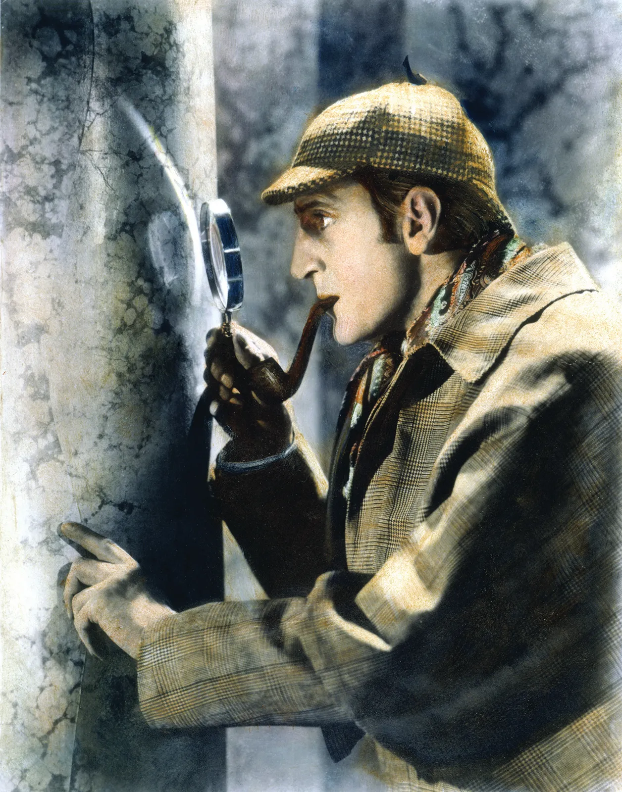

Sherlock Holmes

- Occupation: Consulting Detective
- Known for: Extraordinary powers of observation and deduction
- Home: 221B Baker Street, London
The Weaknesses of Sherlock Holmes
- Substance Abuse: When bored between cases, Holmes frequently turned to a
"seven-per-cent solution" of cocaine and morphine to stimulate his overactive mind.
- Severe Boredom & Impatience: Without a complex intellectual puzzle to solve, he becomes
deeply restless, moody, and self-destructive.
- Emotional Blind Spots: He dismisses emotional and romantic dynamics as "flaws" in
logical thinking, occasionally leaving him vulnerable to being outsmarted by those who leverage human
emotion (e.g., Irene Adler).
- Arrogance & Overconfidence: His supreme belief in his own deductive powers occasionally
causes him to underestimate his adversaries or overlook simpler explanations.
- Gaps in General Knowledge: As Watson famously noted, Holmes purposefully filters out
information irrelevant to his work, leaving him completely ignorant of basic astronomy (like the Earth
revolving around the sun), literature, and contemporary politics.